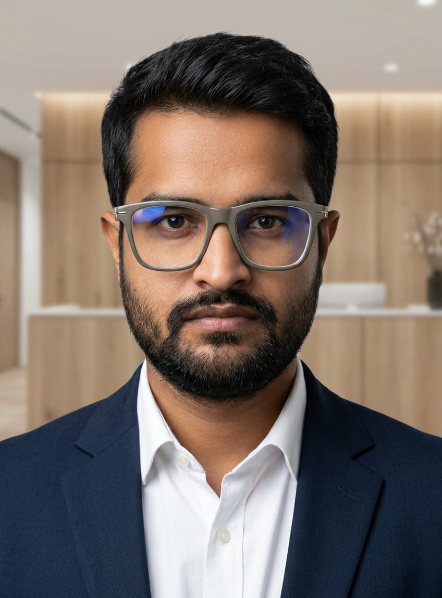

$ ruby whoami.rb
6+ yrs Ruby on Rails · systems used by millions of users
open for remote contract work (EU / US)

Lalit Hammad
Ruby on Rails Developer
6+ years building and scaling Rails systems — inventory platforms used by millions of users, benefits-admin backends, and legacy upgrades other developers avoid touching. Remote-first, available now.
git log --author=lalit
Experience
6+ years across contract and product teams, EU/US and India-based clients.
Ruby on Rails Developer (Contract)
Jan 2026 — Present
Intuit · GoCo (QuickBooks Benefits Admin Platform)
- Contract Rails developer on GoCo, a benefits administration platform recently acquired by Intuit and integrated into the QuickBooks ecosystem.
- Building survey functionality from the ground up — data models, backend logic, and reporting.
- Developing reporting features for HRA (Health Reimbursement Arrangement) workflows.
Ruby on Rails Developer
Aug 2022 — Dec 2025
VcdInfotech · Tuosystems (High-Traffic E-commerce Platform)
- Led development of a scalable inventory management system supporting millions of users across the US and Canada.
- Replaced legacy access control with secure, UI-based role management using CanCanCan.
- Built PDF poster generation, order total-based discounts, and product-level sales tax logic.
- Wrote RSpec unit/integration tests plus Selenium end-to-end scripts for cross-browser reliability.
- Worked full-stack: ERB, HAML, HTML, CSS, JavaScript, jQuery, AJAX for dynamic UI.
- Joined client meetings for requirements, deployment planning, and post-launch support.
Ruby on Rails Developer
Sep 2021 — Aug 2022
Witmates Technologies · Smartpath (Business Management System)
- Designed and built the entire backend architecture from scratch; shipped Version 1.0.
- Integrated SendGrid, HelloSign, Amazon S3, and Sidekiq for background jobs.
- Implemented Devise + JWT authentication with CanCanCan role-based access control.
- Delivered high-performance APIs with RSpec coverage and Bullet-gem query optimization.
Ruby Developer
Mar 2021 — Sep 2021
Thoughtmines Infotech · ACMS (Academic Control Management System)
- Upgraded a large legacy application: Ruby 1.3 → 3.0, Rails 3.2 → 5.8.
- Resolved critical bugs and improved system stability during and after the upgrade.
Python Developer (Intern)
Feb 2020 — Mar 2021
Asperrow Tech · Entangle IT Solution
- Developed and supported Python application features across two internships prior to specializing in Rails.
bundle list
Skills
# languages & frameworks
ruby-on-rails (3.2 → 7)
python-django, html5, css3, javascript, jquery, php
# data
postgresql admin, tuning, indexing, backups, replication
mysql
# infra
aws s3, minio
docker / kubernetes (working exposure)
# core gems
sidekiq, devise, jwt, cancancan, activeadmin, bootstrap
rspec, selenium, bullet
# integrations
stripe, sendgrid, hellosign
# ai / llm
openai-api, anthropic-api RAG, prompt engineering
ls ./projects
Projects
TeamUniformOrders — Inventory & Ordering Platform
- Led development of the inventory management core, from data model through checkout.
- Replaced legacy access control with UI-based role management using CanCanCan.
- Shipped PDF poster generation, order-total discounts, and product-level sales tax logic.
- Backed by RSpec + Selenium end-to-end tests for cross-browser reliability.
Smartpath — Business Management System
- Designed and built the entire backend architecture from scratch.
- Integrated SendGrid, HelloSign, S3, and Sidekiq background jobs.
- Devise + JWT authentication with CanCanCan role-based access control.
ACMS Legacy Upgrade
- Upgraded a large, actively-used legacy academic management system with no downtime for the client.
- Resolved critical stability bugs surfaced during the migration.
contact --remote
Let's work together
Available now for remote contract work, EU/US time zones. Reach out directly — no agency in between.